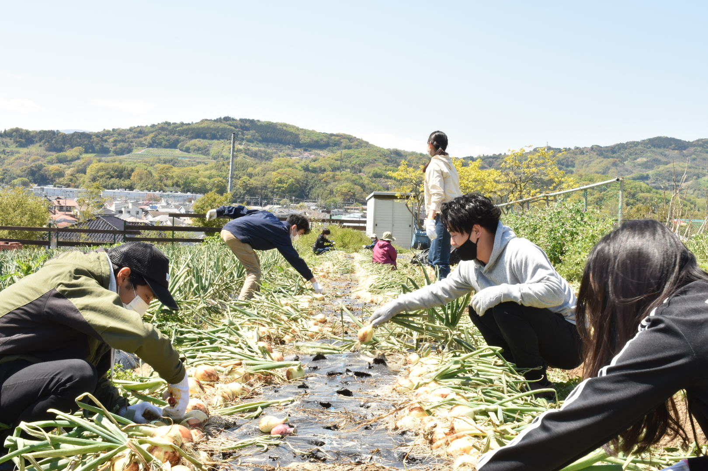
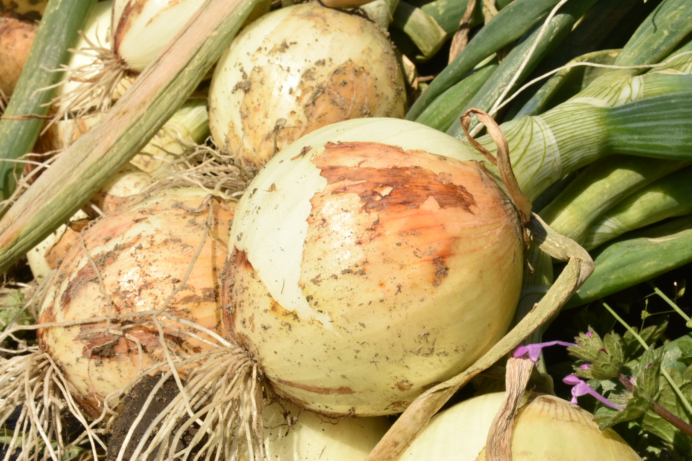
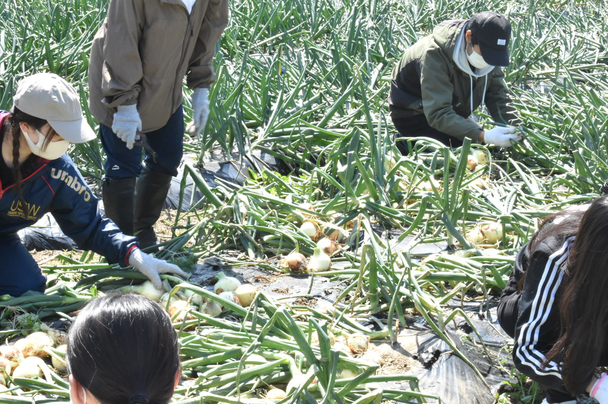

祥雲寺マルシェを開催しました
2021.04.18 ふじわら
先週末の4/10に昨年末より栽培している下中玉ねぎの収穫をスタートしました。

下中玉ねぎとは、神奈川県小田原市東部の「下中地区」で生産されている玉ねぎの総称です。Agrlienの畑があるのがまさにこの下中地区にあたります。海に面したこの地域に吹く潮風と昼夜の寒暖差が、甘い美味しい玉ねぎを作るのに適していると言われています。

昨年の12月ごろに植え付けた玉ねぎの苗は、病気に負けずすくすくと大きく育ちました。収穫した玉ねぎを実際に食べたみましたが、今年も甘みの凝縮した柔らかくて美味しい玉ねぎができていました。何度食べても絶品です！
Agrlienのメンバーみんなで栽培した下中玉ねぎは、現在オンラインショップで予約販売の受付中です。気になった方はぜひ以下のサイトをご覧ください。
公式オンラインショップ（https://agrlien.stores.jp）

また、現在新メンバーを絶賛募集中です。新１年生はもちろん、この春農学部に進学した新３年生など、学年問わず入会可能です（Agrlienでは３年生で入会するメンバーも多くいるのでご安心を！）。どの大学の肩も入っていただけるインカレサークルです。まずは、農作業やマルシェの体験にぜひきてみてください。
興味のある方は公式LINEアカウント（https://lin.ee/4DyRtg7zK）より気軽にご連絡ください。
※本ブログの内容は個人的な意見であり、いかなる所属の見解を示しているものではありません。
※文章、画像の無断転載・無断使用を禁じます。